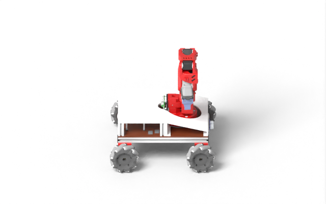

One shared program
Robot, world, behavior and checks stay connected by name.
RobotDSL is a family of languages for robot development. One program describes the robot, its world, its behavior and how it is evaluated; a compiler assembles the machine, derives its settings and checks the whole system before anything runs. MobileDSL, for mobile robots, is the first language of the family.
Robot, world, behavior and checks stay connected by name.
Check assembly and references before generating ROS and Gazebo files.
MobileCopilot finds parts, writes the program and uses compiler feedback.
Coding agents use MobileDSL as their tool: they pick parts from a library, write one short program, and the compiler assembles the robot and emits the files ROS 2 runs in Gazebo or MuJoCo. Claude Code built the robot shown here from one benchmark request. The guide describes the language.
> In an open circular field, drive forward with gradually increasing distance and spin slightly each time to expand outward in a spiral. The arm and gripper shown in the image remain fixed; only the mobile base moves. [image]● Searching the parts library└ a white mecanum base, four black mecanum wheels, a red arm with gripper and a front ultrasonic sensor● Writing the MobileDSL program└ the robot, the open field and the spiral task● Compiling with mobiledsl└ spiral_arm_bot: 7 parts assembled
Loading the 3D model…

Three coding agents take the same 50 design requests, in MobileDSL and directly as ROS/Gazebo files.
Execution success in simulation
Time per design
Execution success in simulation, MobileDSL vs. ROS/Gazebo files: Codex / gpt-5.6-sol 74% vs. 24% · Codex / gpt-6-astra 82% vs. 40% · Claude Code / claude-opus-4-8 64% vs. 22%.
Time per design: 4.8 vs. 12.2 min · 2.5 vs. 4.2 min · 4.5 vs. 9.5 min.
The robot navigates around corridor obstacles. Each video shows the external view, with onboard RGB and depth (0.3–3.5 m) on the right.
Ask questions, share robot designs and follow announcements.
Browse the parts library and edit a design in the browser.
Upload a mesh and its connectors; after review it joins the shared library, credited to you.
Tell us when a generated design looks wrong or the site misbehaves.
@misc{robotdsl_mobilecopilot,
title = {MobileCopilot: A Domain-Specific Language Framework
for Agentic Mobile Robot Design},
author = {{RobotDSL Team}},
howpublished = {\url{https://mit-cdfg.github.io/robotdsl-site/}}
}